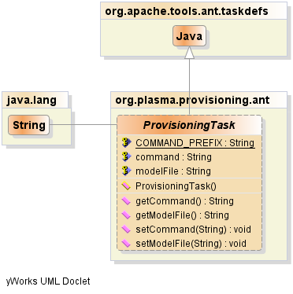

JavaScript is disabled on your browser.
java.lang.Object
org.apache.tools.ant.ProjectComponent
org.apache.tools.ant.Task
org.apache.tools.ant.taskdefs.Java
org.plasma.provisioning.ant.ProvisioningTask
All Implemented Interfaces:
java.lang.Cloneable
Direct Known Subclasses:
DSLTask , QueryTask , RDBTask , SDOTask
public abstract class ProvisioningTask
extends org.apache.tools.ant.taskdefs.Java
Common superclass for provisioning tasks.
Note: issues with making custom tasks inherit from Any Java task are:
1.) the classpath declared in the taskdef does not seem to propogate
through to the task execution

Field Summary
Fields
Modifier and Type
Field and Description
protected java.lang.Stringcommand
protected static java.lang.StringCOMMAND_PREFIX
protected java.lang.StringmodelFile
Fields inherited from class org.apache.tools.ant.taskdefs.Java
redirector, redirectorElement
Fields inherited from class org.apache.tools.ant.Task
target, taskName, taskType, wrapper
Fields inherited from class org.apache.tools.ant.ProjectComponent
description, location, project
Method Summary
Methods inherited from class org.apache.tools.ant.taskdefs.Java
addAssertions, addConfiguredRedirector, addEnv, addSysproperty, addSyspropertyset, checkConfiguration, clearArgs, createArg, createBootclasspath, createClasspath, createJvmarg, createPermissions, createWatchdog, execute, executeJava, executeJava, getCommandLine, getSysProperties, handleErrorFlush, handleErrorOutput, handleFlush, handleInput, handleOutput, maybeSetResultPropertyValue, run, setAppend, setArgs, setClassname, setClasspath, setClasspathRef, setCloneVm, setDir, setError, setErrorProperty, setFailonerror, setFork, setInput, setInputString, setJar, setJvm, setJvmargs, setJVMVersion, setLogError, setMaxmemory, setNewenvironment, setOutput, setOutputproperty, setResultProperty, setSpawn, setTimeout, setupRedirector
Methods inherited from class org.apache.tools.ant.Task
bindToOwner, getOwningTarget, getRuntimeConfigurableWrapper, getTaskName, getTaskType, getWrapper, init, isInvalid, log, log, log, log, maybeConfigure, perform, reconfigure, setOwningTarget, setRuntimeConfigurableWrapper, setTaskName, setTaskType
Methods inherited from class org.apache.tools.ant.ProjectComponent
clone, getDescription, getLocation, getProject, setDescription, setLocation, setProject
Methods inherited from class java.lang.Object
equals, finalize, getClass, hashCode, notify, notifyAll, toString, wait, wait, wait
PlasmaSDO™ and PlasmaQuery™ are trademarks of TerraMeta Software, Inc. Copyright © 2011 - All Rights Reserved.